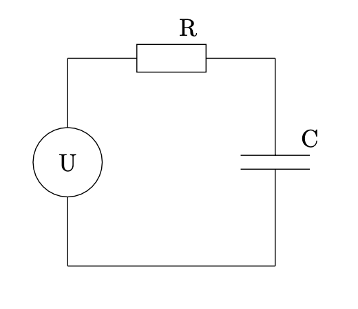

17.4. Coding the Implicit Euler method#
In every time-step we have to solve for the new value \(y_{n+1}\):
The function \(f : {\mathbb R}^d \rightarrow {\mathbb R}^d\) is the right-hand side of the ODE, which has been brought into autonomous form.
For the current time-step we rename \(y_n\) and \(y_{n+1}\) to \(y_{\text{old}}\) and \(y\), and rewrite the equation as
We use our function algebra to build this composed function m_equ, and throw it into the Newton solver.
If we make the time-step not too large, the value \(y_n\) of the old time-step is a good starting value.
To express that the independent variable is \(y_{n+1}\), we create an IdentityFunction. The old
value \(y_{\text{old}}\) is a constant, represented as ConstantFunction.
In every time-step we reset the value for \(y_{\text{old}}\).
The time-step \(\tau\) itself goes as Parameter into the function algebra. Such a parameter can be set and changed later.
Then the implementation of the implicit Euler method looks like:
class ImplicitEuler : public TimeStepper
{
std::shared_ptr<NonlinearFunction> m_equ;
std::shared_ptr<Parameter> m_tau;
std::shared_ptr<ConstantFunction> m_yold;
public:
ImplicitEuler(std::shared_ptr<NonlinearFunction> rhs)
: TimeStepper(rhs), m_tau(std::make_shared<Parameter>(0.0))
{
m_yold = std::make_shared<ConstantFunction>(rhs->dimX());
auto ynew = std::make_shared<IdentityFunction>(rhs->dimX());
m_equ = ynew - m_yold - m_tau * m_rhs;
}
void doStep(double tau, VectorView<double> y) override
{
m_yold->set(y);
m_tau->set(tau);
NewtonSolver(m_equ, y);
}
};
17.4.1. Exercises#
Try the implicit Euler method for the mass-spring system
Implement the Crank-Nicolson method.
Compare the results of the mass-spring system for these three methods, and various time-steps. What do you observe?
Measure the order of convergence, see section Consistency and convergence: solve the mass-spring system with \(m = k = 1\) and \(y(0) = (1, 0)\) up to \(T = 2 \pi\), where the exact solution is \(y(T) = (1, 0)\). Use the explicit Euler, improved Euler, implicit Euler, and Crank-Nicolson methods with \(N = 2^4, 2^5, \ldots, 2^{12}\) time-steps. Plot the error \(\| y_N - y(T) \|\) over \(\tau\) in a double-logarithmic plot, and determine the orders.
Turn the measurement into an automated test with Catch2, see Automatic testing: compute \(p \approx \log_2 \big( e(\tau) / e(\tau/2) \big)\) for every method, and
REQUIREthat it matches the expected order up to \(\pm 0.1\). Use this test for all methods you implement later.Model an electric network by an ODE. Bring it to autonomous form. Solve the ODE numerically for various parameters with the three methods, and various time-steps.

Voltage source \(U_0(t) = \cos(100 \pi t)\), \(R = C = 1\) or \(R = 100, C = 10^{-6}\).
Ohm’s law for a resistor with resistance \(R\):
\[ U = R I \]Equation for a capacitor with capacitance \(C\):
\[ I = C \frac{dU }{dt} \]Kirchhoff’s laws:
Currents in a node sum up to zero. Thus we have a constant current along the loop.
Voltages around a loop sum up to zero. This gives:
\[ U_0 = U_R + U_C \]
Together:
\[ U_C(t) + R C \frac{dU_C}{dt}(t) = U_0(t) \]Use initial condition for voltage at capacitor \(U_C(t_0) = 0\), for \(t_0=0\).
Explain your observations with the stability functions from section Stability for linear ODEs. Which of the two parameter sets for the RC circuit is stiff?